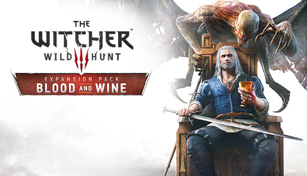
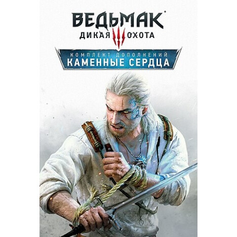

Кров і Вино — друге велике пригодницьке доповнення до гри Відьмак 3: Дикий Гін. Анонсоване одночасно з 'Серцями з каменю', воно було випущено 31 травня 2016 р. для всіх трьох платформ: PC, PlayStation 4 і Xbox One.
Абсолютно нове королівство, нові персонажі і монстри. Кров і Вино — це 30-годинна пригода, наповнена похмурими таємницями, несподіваними поворотами, романтикою і обманом. Грайте за професійного вбивцю чудовиськ Ґеральта із Рівії і вирушайте в Тусеннт, далекі землі, не зворушені війною, де вам належить розкрити страшну загадку небезпечного чудовиська, що тероризує князівство.
«Кам'яне серце» — друге велике сюжетне доповнення для гри Відьмак 3: Дикий Гін, випущене 13 жовтня 2015 р. для всіх основних платформ: PC, PlayStation 4 і Xbox One.
«Кам'яне серце» — це понад 10 годин нових пригод Ґеральта в хащах Нічиєї землі, а також у закутках і провулках Оксенфурта , де він виконуватиме замовлення від таємничого Скляного Чоловіка на ім'я Гюнтер О'Дімм. Ґеральту, що заплутається в густих тенетах обману, знадобиться вся його хитрість і сила, щоб розгадати таємницю й вийти сухим із води.
Легендарного відьмака Ґеральта з Рівії, професійного вбивцю потвор, цього разу найняли, щоб перемогти безжального отамана вільної компанії, Ольґерда з роду Евереків, людину, яка володіє даром безсмертя. У цьому доповнені ви зможете обрати власний шлях пригод і насолодитися такими авантюрами, як пограбування найбільш захищеної скарбниці в Оксенфурті й нічна вечірка з мерцем, а також кинути виклик найхимернішій істоті, з якою Ґеральт коли-небудь мав справу.
Посилання на інші сторніки:
Link to main